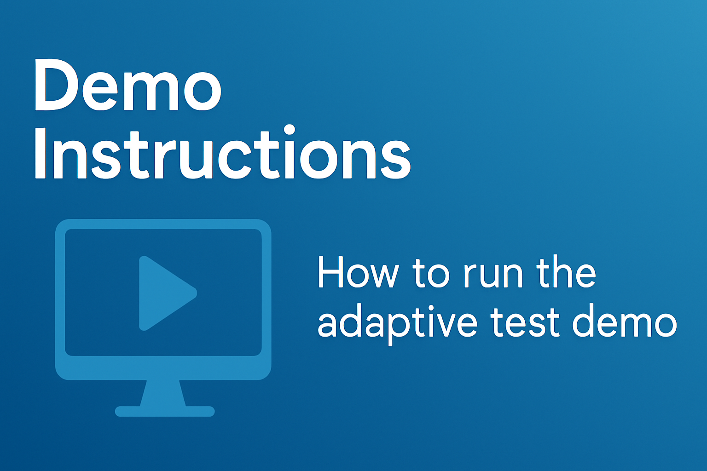
How to Run the Adaptive Test Demo
Reference: RA_453
This section provides step-by-step instructions to explore the key features of the Adaptive Test DAS Demo.
Step 1: Load the Test Program
Use the SimpleOI interface to load your test program.

Step 2: Execute the Program in Loop Mode
Click the Loop button to execute the program 10 times. Once completed, press the Stop button.
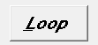
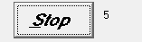
Step 3: Adjust Test Limits Dynamically
In the demo application, click Update Test Limits. Use the slider to modify the thresholds, then click Send Limits to apply them.
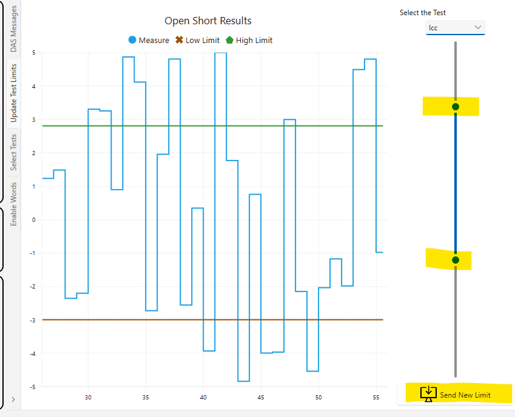
Run the test a few times from the SimpleOI interface to observe the impact.
Step 4: Observe the Updated Limits
The graphical output will reflect the new limit values.
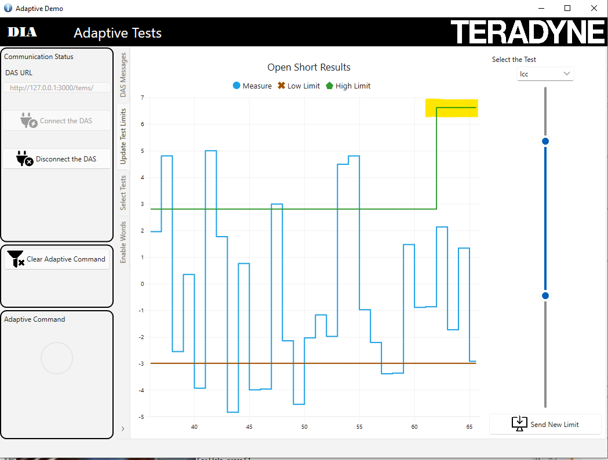
In DAS, select the Adaptive_Change limits message. Click on the message to inspect its contents.
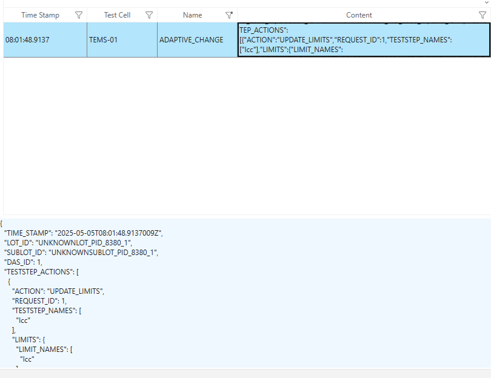
You can also observe the received message in the IGXL test program output.
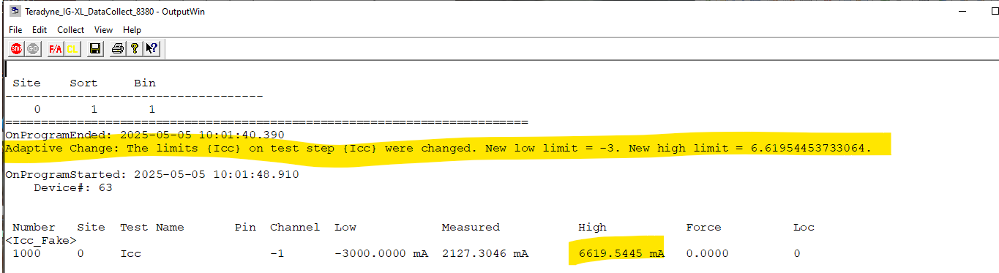
Step 5: Work with Enable Words
This part demonstrates how to activate a sub-flow using enable words. Initially, only the test ICC is active.
To explore more:
- Access the engineering view in SimpleOI (password:
Teradyne) - Open the test program and locate the
DemoFlow - Visualize the flow and locate the enable word logic
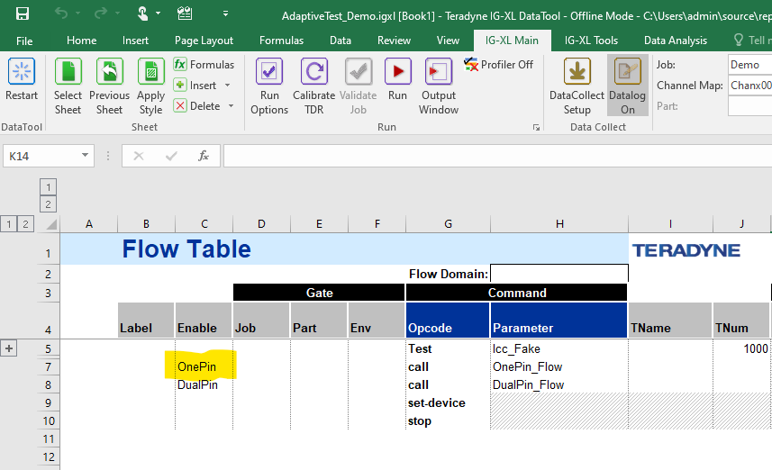
Click on the OnePin EnableWord option and run the test program once.
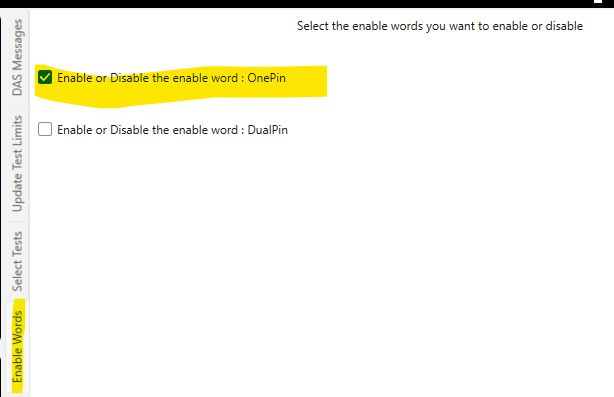
You’ll see that more tests are now activated:
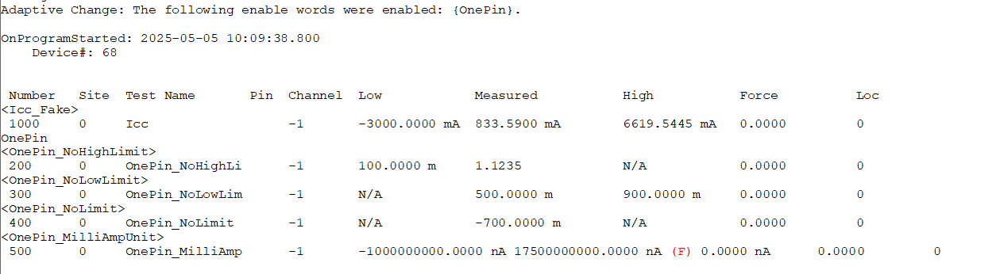
A new Adaptive Change message will also be generated:
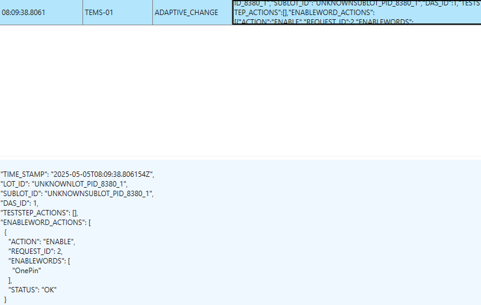
Step 6: Enable or Disable Tests
This step shows how individual tests can be selectively enabled or disabled.
- Go to the Select Test tab in the DAS interface
- A count of executions for each test is shown in blue
- For best demo results, activate DoAll in IGXL Run Options
Now, disable the OnePin_NoHighLimit test by selecting it.
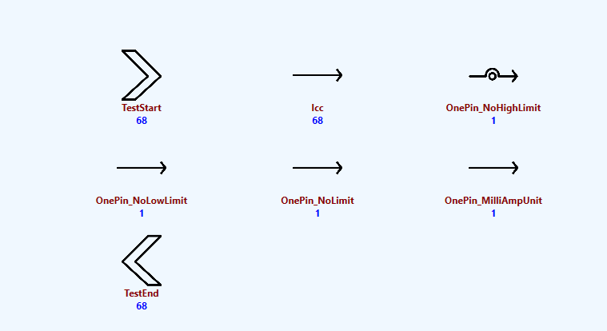
Run the test program once. You’ll see that the test is skipped.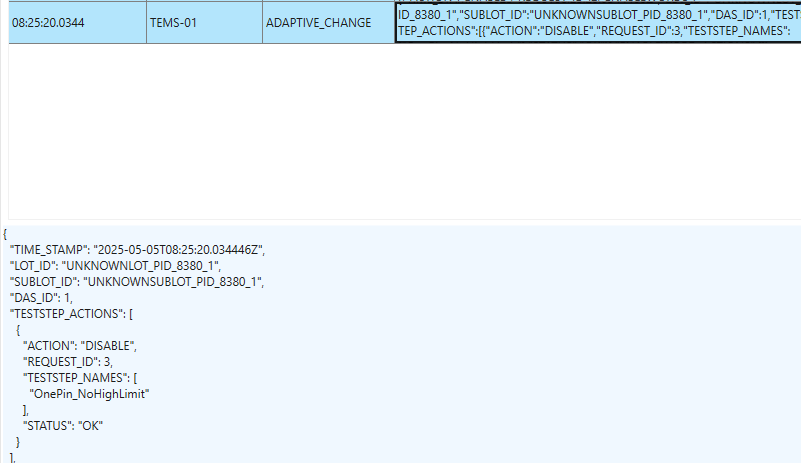
You can confirm this in IGXL:
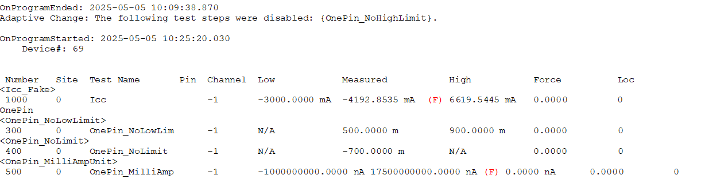